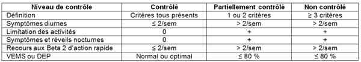
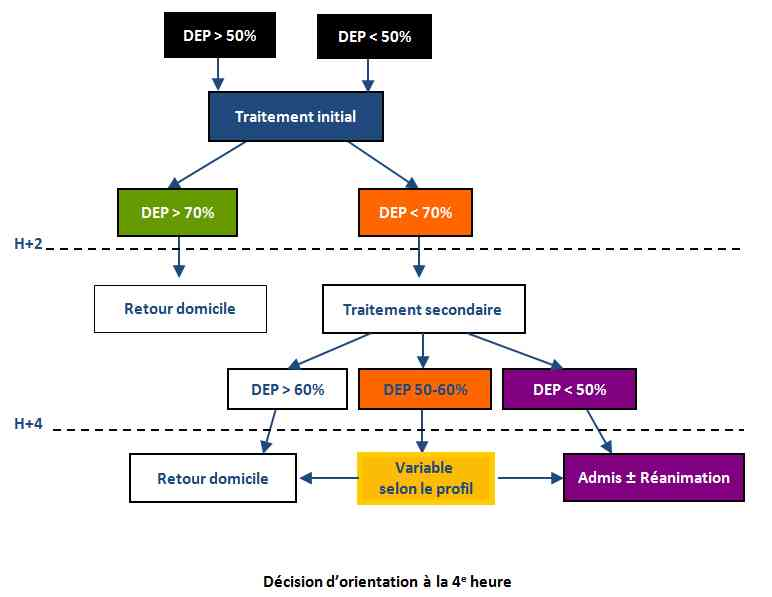

Bienvenue Sur Medical Education
Asthme aigu de l'adulte
Spécialité : pneumologie /
Points importants
-
Prévalence 5-6% en France
-
50% de l’asthme de l’enfant persistent à l’âge adulte
-
2% des patients se présentant aux urgences
-
Mortalité en décroissance mais encore plus de 1 000 décès /an en France
-
La gravité initiale et l'orientation du patient sont pour une large part basées sur le DEP (qui s'exprime en % par rapport à la théorique) ou mieux, au DEP optimal
-
DEP > 50 % = crise modérée, DEP entre 30 et 50 % = crise sévère, DEP < 30 % = asthme aigu grave (AAG)
-
Les ß 2 agonistes inhalés sont toujours le traitement prioritaire
-
L'asthme débutant chez le sujet âgé est un asthme cardiaque jusqu’à preuve du contraire
Présentation clinique / CIMU
SIGNES FONCTIONNELS
Présentation clinique / CIMU
SIGNES FONCTIONNELS
Généraux
- Fièvre (rare chez l’adulte)
Spécifiques
- Dyspnée
- Sueurs
- Agitation
- ± Orthopnée
CONTEXTE
Terrain
- Environnement socioéconomique défavorisé
- Homme
Traitement usuel
- Traitement de fond de l’asthme (dose de corticoïdes inhalés, corticothérapie orale)
- Traitement autre (cardiologique…)
Antécédents
- Sinusite
- Reflux gastro-oesophagien
- Cardiopathie associée
- Contrôle de l’asthme dans les semaines précédentes
- Niveaux de contrôle de l’asthme
 _787 Tableau Niveaux de contrôle de l'asthme
Facteurs de risque d’AAG
- Patient vivant seul
- Asthme ancien
- Précarité psycho-sociale
- Maladie psychiatrique
- Asthme sous traité
- Absence de suivi médical régulier
- Déjà hospitalisé/intubé pour une crise d'asthme
- Homme
- Non observance du traitement
- Intolérance ou allergie médicamenteuse (AINS, aspirine, pénicilline…)
- Utilisation de Béta bloquants
- Consultation récente aux Urgences
Circonstances de survenue
-
Durée de la crise :
-
crise suraiguë si durée < 6h :
- 10-20% des cas
- le plus souvent chez l’homme
- surtout due à allergènes, aspirine, stress, exercice
-
crise progressive si durée > 6h voire plusieurs jours :
- le plus souvent chez la femme
- surtout due à une infection bronchique
-
crise suraiguë si durée < 6h :
EXAMEN CLINIQUE
Pulmonaire recherche
- Sueurs, cyanose, FR
- Difficulté à parler (sans problème / une phrase / 3 mots / impossible : faire lire un texte)
- Tirage intercostal, sus-clavier, sus-sternal
- Sibilants, symétrie (attention au pneumothorax)
- Signes de surinfection bronchique (expectoration purulente)
CRITERES DE GRAVITE
Durée de la crise
- Crise suraiguë (spastique, de gravité brutale)
Syndrome de menace
- Aggravation en quelques jours
- Augmentation de la fréquence des crises
- Augmentation de la gravité des crises
- Résistance au traitement usuel
- Augmentation de la consommation de médicament
- Diminution progressive du DEP
Asthme instable
- Augmentation de la fréquence des crises
- Gêne respiratoire retentissant sur les activités quotidiennes
- Variations diurnes de DEP > 30%
- Résistance au traitement habituel de la crise
- Augmentation de la consommation de ß 2 mimétiques
- Aggravation au petit matin
Signes d'AAG
- Crise inhabituelle ou rapidement progressive
- Difficulté à parler ou à tousser
- Orthopnée, dyspnée importante
- Agitation, sueurs, cyanose
- Signes de lutte, tirage
- FR ≥ 30 / min
- FC ≥ 120 bpm
- DEP < 30 % de la théorique (voir abaques)
- Normo ou hypercapnie
Signes d’alarme
- Impossibilité de parler
- Troubles de la conscience, coma
- Silence auscultatoire
- Pauses respiratoires, gaps
- Collapsus
- Arrêt cardiaque
EXAMENS PARACLINIQUES SIMPLES
- SpO2 : facteur tardif de gravité
-
DEP :
- indispensable à mesurer avant traitement (noter dans le dossier si impossible du fait de la détresse du patient)
- la meilleure de 2 à 3 mesures successives
- noter la valeur absolue mais surtout la valeur par rapport au DEP théorique
- la valeur théorique (max) est idéalement la meilleure valeur qu’a eu le patient hors cirse (sinon voir abaques)
-
± ECG :
- signes droits de cœur pulmonaire aigu
- si diagnostic différentiel avec un asthme cardiaque
CIMU
- Tri 1 ou 2
Signes paracliniques
BIOLOGIQUES
Uniquement si crise sévère
-
GDS + lactates :
- si SpO2 < 90%. L’hypoxémie qui est bien corrélée à la SpO2, est utile pour déterminer le degré d’obstruction bronchique et de retentissement métabolique
- normo ou hypercapnie (AAG)
- Ionogramme sanguin (hypokaliémie)
- NFS (hyperleucocytose ou éosinophilie)
- CRP (si contexte infectieux broncho-pulmonaire)
IMAGERIE
Radiographie de thorax
- Uniquement si décision d’hospitalisation
-
Recherche :
- hyperinflation pulmonaire avec horizontalisation des côtes
- pneumothorax, pneumomédiastin
- foyer de pneumopathie
Diagnostic étiologique
Recherche d'un facteur déclenchant
-
Infection respiratoire (cause la plus fréquente) :
- crise progressive (> 6h voire plusieurs jours)
- composante inflammatoire importante
-
Allergènes, aspirine, AINS, ß bloquant, stress, exercice (hyperventilation, air froid et sec) :
- provoquent plutôt des crises suraiguës (< 6h) à composante spastique prédominante
- Changements de temps, augmentation importante de l’humidité, pollution
- Particules organiques : coton, graines
- Non observance thérapeutique
Diagnostic différentiel
-
Asthme cardiaque (OAP)
-
Exacerbation aiguë de BPCO
-
Emphysème
-
Inhalation de corps étranger
-
Bronchiolite
-
Pneumopathie
-
Dilatation des bronches
-
Mucoviscidose
Traitement
TRAITEMENT PREHOSPITALIER / INTRAHOSPITALIER
Traitement
TRAITEMENT PREHOSPITALIER / INTRAHOSPITALIER
Traitement initial
- Monitorage non invasif de la FC, PA, SpO2, FR et du DEP
- Voix veineuse périphérique de bon calibre si crise sévère ou AAG + NaCl 0,9%
- Oxygénothérapie au masque facial si SpO2 à l’air ambiant < 95%
-
Nébulisations toutes les 20 min pendant la 1ère h :
-
avec masque + nébuliseur :
- si DEP initial > 30% de la théorique : ß 2 mimétique seul
- si DEP initial ≤ 30% ou ß 2 mimétique + Bromure d’ipratropium
-
débit de gaz vecteur toujours compris entre 6 et 8 L/min :
- gaz = air si SpO2 ≥ 95%
- gaz = oxygène si SpO2 < 95%
- NB : si, malgré l’O2 en gaz vecteur, la SpO2 reste < 95%, ne pas augmenter le débit du nébuliseur (pour garder le bon diamètre des particules = 5 µ) mais ajouter de l’O2 en sonde nasale
-
avec masque + nébuliseur :
- Corticothérapie systématique IV (AAG) ou per os (asthme aigu modéré à sévère) : 60 à 80 mg en dose initiale
- Evaluation de la réponse à H1
Traitement secondaire
- Après les nébulisations de la 1ère heure, continuer 1 à 2 fois/h en fonction de la réponse (voir paragraphe « MEDICAMENTS » ci-dessous)
-
Si non réponse à H2 (DEP < 70%) :
- ajouter aux nébulisations du sulfate de magnésium IVSE sur 20 min
- ß 2 agonistes IV en 3e intention seulement si non amélioration
-
Intubation à séquence rapide et ventilation contrôlée :
-
indications = signes d’alarme :
- forme d’emblée très grave (cyanose, collapsus, bradycardie, épuisement, bradypnée, arrêt respiratoire, agitation, coma). NB : tenter une nébulisation de ß2 agoniste et Bromure d’ipratropium tout en préparant le matériel d’intubation
- aggravation progressive malgré traitement médical optimal
- pré oxygénation sous O2 pur pendant 3 min
- induction par Kétamine 2 mg/kg IV et Célocurine 1 mg/kg IVL patient assis
- allonger le patient dès la perte de conscience
- intubation trachéale avec une sonde du plus gros diamètre possible (limiter les résistances expiratoires du circuit)
-
réglages initiaux du respirateur :
- mode : volume contrôlé ou pression contrôlée
- débit d’insufflation : constant
- volume courant : 6-8 mL/kg
- temps expiratoire : long (I/E = 1/3 à 1/5)
- débit inspiratoire instantané élevé : 100 L/min
- fréquence respiratoire basse : 6-10/min
- FiO2 élevée : > 60%
- pression de plateau < 30 cmH2O
- PEP : 0 cm H2O
-
indications = signes d’alarme :
MEDICAMENTS
ß 2 mimétiques nébulisés
- Première intention en nébulisation : effet bronchodilatateur le plus puissant et le plus rapide
- 5 mg par nébulisation pour Salbutamol ou terbutaline
- Délai d’action 3-5 min; Pic d’action 5-15 min
- En nébulisation continue ou toutes les 20 min pendant la 1ère heure puis 1 à 2 fois/h
Bromure d'ipratropium
- Seulement si AAG (DEP initial ≤ 30%)
- Systématiquement en association au ß2 mimétique pour chacune des nébulisations
- Une glossette de 0,5 mg par nébulisation
Corticothérapie
- Action retardée mais potentialisation de l’effet des ß2 mimétiques
- A donner systématiquement et le plus précocement possible (dans la 1ère heure)
- Voie orale ou parentérale
- 1 mg/kg d’équivalent prednisolone
Sulfate de magnésium
- Seulement si AAG et non réponse à H2 au traitement initial
- Action broncho-dilatatrice par effet anti-calcique sur les fibres musculaires lisses
- Traitement de seconde intention
- 2 g en IVSE sur 20 min
ß2 mimétiques en IVSE
- Manque d’évidence pour l’indication des β2 agonistes IV (non évidence du bénéfice clinique)
-
Recommandations :
- quand la thérapeutique inhalée est impossible ou inefficace
- jamais de dose de charge en IVD
- débuter à 1 – 2 mg/h
- inutile d’augmenter les posologies > 5 mg/h
Adrénaline
- Commencer par 0,5 mg/h en IVSE uniquement si choc anaphylactique associé
Surveillance
CLINIQUE
-
Surtout DEP/h +++
-
dans l’AAG, si DEP devient > 50% à la 1ère heure => possibilité de ne pas être admis si pas de profil à risque
-
Sibilants
-
FR, PA, FC (tachycardie secondaire aux ß2 agonistes)/h
-
Sueurs
-
SpO2 continue
PARACLINIQUE
- dans l’AAG, si DEP devient > 50% à la 1ère heure => possibilité de ne pas être admis si pas de profil à risque
Dans l’AAG
- Kaliémie (hypokaliémie secondaire à l’administration des ß agonistes)
- GDS
Devenir / orientation
ORIENTATION PREHOSPITALIERE EN FONCTION DU DEP
Réévaluation après 1 ou 2 nébulisations : Clinique, DEP
-
Nette amélioration clinique et DEP > 80% :
- soins sur place possible
- auto-surveillance du DEP
- rappeler si aggravation
- visite du médecin traitant dans la journée
-
Signes peu sévères et DEP 50-80% :
- transport médicalisé vers les Urgences
-
Aggravation, DEP < 50% :
- transport médicalisé en réanimation
CRITERES D’ADMISSION
- Voir Algorithme fonction de l’évolution du DEP
CRITERES DE SORTIE DES URGENCES
- DEP > 70% à H2
- Sinon, DEP > 60% après 1 heure de stabilité après la dernière nébulisation (faire 2e bilan à H4)
- Absence de signes cliniques (pas de sibilants)
ORDONNANCE DE SORTIE DES URGENCES
Majoration du traitement de fond
- Corticoïdes inhalés (doses max. 1 500-2 000 µg)
-
Utilité des associations corticoïdes + ß2 longue durée :
- ex : Seretide® 250 : 2 x 2/j ou Symbicort® 400 : 2 x 2/j pendant 1 mois
- Corticoïdes PO type Solupred® (0,5 mg/kg pendant 10j) ou Cortancyl®
- Augmenter le traitement de fond
- ß2 mimétiques de courte durée : 2 inhalations en cas de gêne respiratoire, à renouveler au bout de 10 min en cas de mauvaise efficacité. Après 6 inhalations, contacter un médecin
Traitement d'une surinfection bronchique éventuellement associée
Ordonnance pour l’obtention d’un peak-flow
RECOMMANDATIONS DE SORTIE
- Prendre régulièrement son traitement même si le patient a l’impression de se sentir mieux (ne jamais l’arrêter)
- Mesurer son DEP (idéalement 2 fois/j à 12h d’intervalle ; si la différence est > 20%, prévenir son médecin traitant)
- Prendre rapidement contact avec son médecin traitant
- Arrêter le tabac et les atmosphères enfumées ou empoussiérées
- Ne pas utiliser d’oreiller, de traversin ou de couette en plumes mais en synthétique
- Aérer régulièrement les pièces
- Eviter les climatiseurs
- Eviter de pratiquer une activité physique en cas de température extérieure très froide ou en cas de pics de pollution
- Eviter la compagnie des animaux domestiques (chiens, chats, cobayes, hamster, oiseaux…)
- Traiter rapidement toute infection respiratoire
- En période de pollinisation, éviter les sorties à la campagne
- Avoir toujours sur soi une ordonnance
- Consulter rapidement ou faire le 15 si aggravation des symptômes
Algorithme
-
Algorithme fonction de l’évolution du DEP
-

_788
Algorithme
Algorithme fonction de l'évolution du DEP
Bibliographie
- Révision de la troisième conférence de consensus en réanimation et médecine d'urgences de 1998: prise en charge de l'AAG de l'adulte et de l'enfant
- Joye F, Marion F., Broche C., Plaisance P., Guitteny S. Conduite à tenir devant une crise d'AAG de l'adulte. Presse Médicale. 2005
- Salmeron S. Asthme aigu grave. Encyclopédie Médico-Chirurgicale. 2007 ;6 :39-50
Auteur(s) : Anne-Laure POMEL, Johana MALKA